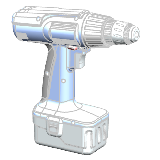
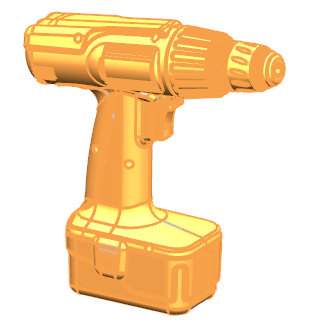
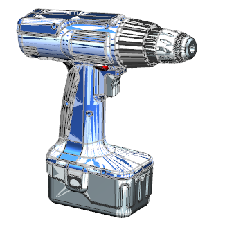
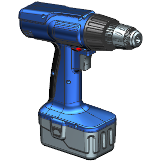
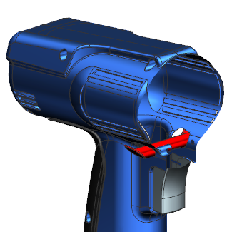
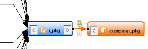

使用片体创建包装文件
如果您的供应商不需要实体，那么您可以创建链接的片体。
-
在部件文件customer_pkg 中，删除所有链接的体。
-
将 i_pkg 设为显示部件。

-
右击 customer_pkg 并选择替换引用集→整个部件。
-
将 customer_pkg 设为工作部件。

-
选择装配→高级→链接的外部。
-
在链接的外部对话框中，点击全选。
-
在选择步骤组中，点击外部面 。
-
设置如下参数：
-
选择使用 = 隐藏线
-
弦公差 = 0.0254
-
分辨率 = 正常
-
视图 = 六个标准视图
-
-
点击选择面。

-
在选择步骤组中，点击射线原点 。
-
点击确定。

-
确保 customer_pkg 为显示部件。

-
打开剪切工作截面
 以检查创建的片体。
以检查创建的片体。
-
打开关系浏览器
 以检查 WAVE 链接。
以检查 WAVE 链接。仅有一个从部件文件 i_pkg 到部件文件 customer_pkg 的 WAVE 链接。这个链接是 customer_pkg 为工作部件时您在部件导航器中看到的链接的外部特征。此外，有多个链接到部件文件 i_pkg 的 WAVE 链接。

-
关闭所有部件。
相关信息
还有其它高级装配命令用来包裹与简化撞破。
使用命令查找器查找包裹装配与简化装配。